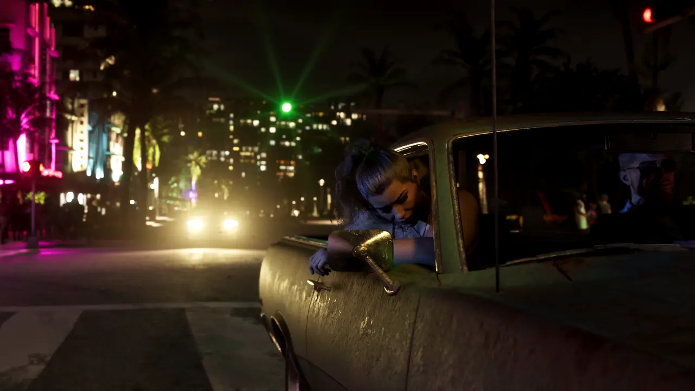
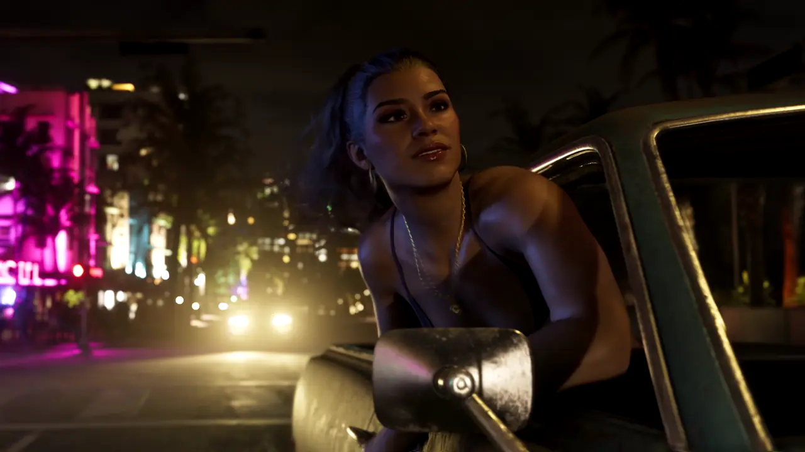

Guia Leonida Guia de fã não oficial de GTA VI

O lado mais quente de Leonida, explicado esquina por esquina.

Protagonista
Lucia Caminos
Saiu da prisão decidida a virar a própria sorte. Em Vice City, isso nunca sai barato.
Ver a ficha da Lucia

Depois daqui
No site final, a página segue com o hero em camadas, o tour pelas seis regiões, o bloco editorial de Jason e Lucia, os destaques do catálogo e a linha do tempo. Este protótipo mostra só a abertura e uma cena de vídeo para aprovação.